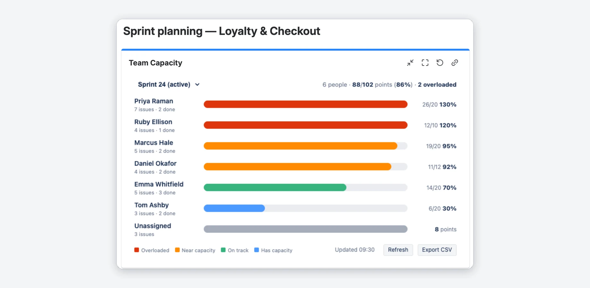

Productivity tools built for Jira and Confluence teams
Lightweight Forge apps with no vendor servers. Your data stays in Atlassian and in the services you connect yourself. Less setup, more done.
Seven apps on the Atlassian Marketplace
Each with a live demo
Epic Progress for Confluence
Turn a Confluence page into a live status page: progress bars for Jira epics, releases and saved filters, with counts, due dates and open work items. Dated snapshots for readers without Jira.
Confluence Cloud · Five macros · Free for up to 10 users

Team Capacity — Sprint Workload & Resource Planning for Jira
See who is over- or under-loaded each sprint: a color-coded workload heatmap per assignee on any Jira dashboard. It uses the estimates your board already has and adds per-person capacity, thresholds and CSV export.
Jira Cloud · Dashboard gadget · Free for up to 10 users

Visual Progress Tracker for Jira
Color-coded progress bars on every Jira issue: set by hand, calculated from the status, or from the subtasks. Two dashboard gadgets show a whole project or one bar per epic.
Jira Cloud · Issue fields and dashboard gadgets · Free for up to 10 users

DevOps Metrics — Deployment Frequency & Lead Time for Jira
Deployment frequency, lead time for changes, change failure rate and time to restore on a Jira dashboard, calculated from the releases and issues you already have in Jira. No CI/CD setup. With benchmark bands and a before/after view of your AI rollout.
Jira Cloud · Dashboard gadgets · Free for up to 10 users

Velocity Chart for Jira
A configurable sprint velocity chart on any Jira dashboard: committed vs completed, an average line and the say/do ratio. Set your own Definition of Done, use story points, issue count or a custom field, and compare up to four boards.
Jira Cloud · Dashboard gadget · Free for up to 10 users

CodeDoc AI for Confluence
Keep Confluence docs in step with your code. Sync versions, config values and README sections from Git onto any page, or let AI write whole documentation pages with Atlassian AI or your own provider key. On every push, on a schedule or on demand.
Confluence Cloud · GitHub, GitLab, Bitbucket, Azure DevOps

Priority Scoring — RICE, WSJF & ICE for Jira
Score Jira issues with RICE, WSJF or ICE right on the issue, rank the backlog and keep an eye on Board Health from 0 to 100. The Rovo agent suggests scores and explains them.
Jira Cloud · Issue fields, app page and dashboard gadgets · Free trial
From demo to your own Jira in three steps
Try the live demo
Every app page has an interactive demo with sample data, right in your browser. Nothing is saved or sent.
Start the free trial
Install the app from the Atlassian Marketplace. Atlassian handles billing and licenses.
Add it where you work
Put a gadget on a dashboard, a field on your issues or a macro on a page. Each app's docs start with a short quick start.
About
I build small, focused Forge apps for Jira and Confluence. They run on Atlassian's cloud; I don't operate servers of my own.
Privacy comes first: no user tracking (only anonymous usage counts), and no data leaves Atlassian unless you connect a service yourself, such as your Git provider or your own AI key in CodeDoc (its optional version check sends only public package names).
Trust Center & Security →Common questions
Can I try an app before I install it?
Where does my data go?
What does it cost?
Do the apps work with Data Center or Server?
How do I get help?
Not sure which app fits?
Tell me what your team needs in a free 30-minute call.
DORA™ is a trademark of Google LLC. DevOps Metrics for Jira is not affiliated with or endorsed by Google.